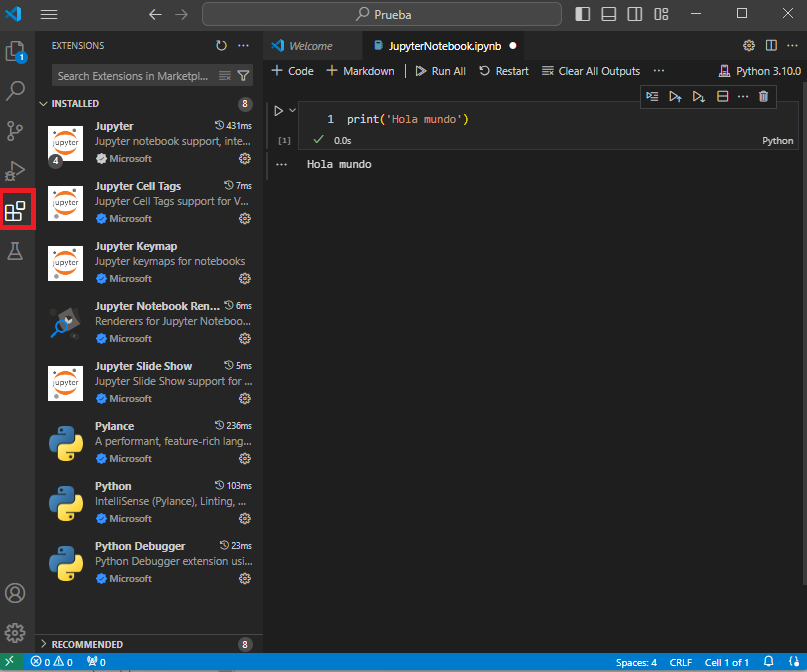

1. Instalación de Python y del entorno de desarrollo.#
1.1. ¿Porqué trabajar con Python?#
Es un lenguaje muy sencillo de comprender: Prácticamente es pseudocódigo indentado.
Alto nivel: abstracciones para no pensar en detalle de implementación.
Dinámicamente tipado: Tipos de variable son determinadas al correr el programa.
No hay que especificar el tipo de las variables al declararlas (veremos los tipos de variables en un cuaderno posterior).
Lenguaje más popular del mundo; existen miles de librerías para realizar cualquier tarea que se requiera.
{kind=link}
1.2. Instalación de Python en Linux, Windows y Mac.#
Ahora veamos cómo realizar la instalación del lenguaje y el editor de Visual Studio Code para poder ejecutar código en un entorno local.
Nota
En este curso se asumirá que se tiene instalado Python 3.10. Se recomienda instalar esta versión para evitar problemas de compatibilidad con el código que veremos.
1.2.1. Linux#
Nota
Python viene instalado por defecto en la mayoría de las distribuciones con Linux. Revisar cuál es la versión de Python que viene por defecto y, en caso de que no sea la 3.10, seguir los pasos de instalación.
Usar el Administrador de paquetes (apt Ubuntu/Debian):
Abrir la terminal.
Actualizar la lista de paquetes
sudo apt update.Instalar python
sudo apt install python3.10.
Revisar versión
Ejecutar `python -V.
También se puede instalar usando Anaconda, sin embargo, no será recomendado para este curso porque tiene problemas cuando queremos usar soluciones distribuidas. Veremos más adelante en el curso cómo usar ambientes virtuales, los cuáles son considerados la mejor práctica.
1.2.2. macOS#
Nota
Python viene instalado en algunas versiones de OS. Al igual que en el caso de Ubuntu revisar cuál versión se tiene y en caso de que no sea la 3.10 seguir los pasos de instalación.
Usar Homebrew:
Instalar Homebrew
/bin/bash -c "$(curl -fsSL https://raw.githubusercontent.com/Homebrew/install/master/install.sh)
- Instalar Python `brew install python`.
Revisar versión de python.
Ejecutar
python -V.
1.2.3. Windows#
Descargar el instalador ejecutable.
Descargar el instalador del sitio oficial, ir a la parte de abajo y seleccionar alguno de los dos ejecutables de Windows (dependiendo de las especificaciones de su equipo) como se muestra en el recuadro rojo de la siguiente imagen.
Ejecutar el instalador asegurarse de seleccionar la casilla que indica
Add Python to PATH.
{kind=link}
1.3. Jupyter Notebooks en VS Code#
1.3.1. Visual Studio Code (VSCode)#
Visual Studio Code, comúnmente conocido como VSCode, es un editor de código fuente desarrollado por Microsoft. Disponible para Windows, Linux, y macOS, VSCode es gratuito y se puede descargar en el siguiente enlace. Este editor es altamente personalizable, permitiendo a los usuarios modificar temas, atajos de teclado, preferencias, y más. Soporta una amplia gama de lenguajes de programación de manera nativa, y su funcionalidad puede ser extendida aún más mediante la instalación de extensiones, las cuales pueden añadir soporte para nuevos lenguajes, herramientas de desarrollo, y otras características como depuración y control de versiones.
Se tienen que instalar extensiones que dan soporte a Python. Estas son sugeridas por VSCode al intentar ejecutar un cuaderno de Jupyter como veremos a continuación.
{kind=link}
1.3.2. Jupyter#
Es una aplicación web de código abierto usado para crear y compartir código, visualizaciones, ecuaciones y texto. Nos permitirá crear cuadernos en los que podremos insertar celdas de código y de texto para realizar el desarrollo de nuestros proyectos.
Su acrónimo proviene de los principales lenguajes de programación a los que da soporte: Julia, Python y R. Jupyter viene con el kernel IPython, que le permite escribir sus programas en Python, pero actualmente hay más de 100 kernels más que pueden ser usados.
Kernel en el contexto de Jupyter puede definirse como un proceso que se ejecuta en segundo plano y proporciona soporte al lenguaje de programación, es decir es responsable de ejecutar el código dentro de la celda y retornar el resultado al frontend.
1.3.3. Crear o abrir un Jupyter Notebook.#
Ctrl+shift+Py ejecutarCreate: New Jupyter Notebooko crear un nuevo archivo con la extensión.ipynb. Así tendremos una ventana como la siguiente:

En la parte superior derecha seleccionar el kernel.

Después de seleccionar el kernel, en la parte inferior derecha de cada celda aparecerá el lenguaje soportado por el kernel.

Para ejecutar código podemos seguir una de las siguientes opciones:
Ejecutar celda actual
Ctrl+Enter.Ejecutar celda actual y avanzar a la siguiente
Shift+Enter.Usar directamente el icono de
Runcomo se muestra en la imagen a continuación.

Otras opciones alternativas para correr más de una celda:
Run All: Ejecuta todas las celdas del cuaderno.Run All Above: Ejecuta todas las celdas que están arriba de la celda seleccionada.Run All Below: Ejecuta todas las celdas hacia abajo de la celda seleccionada.